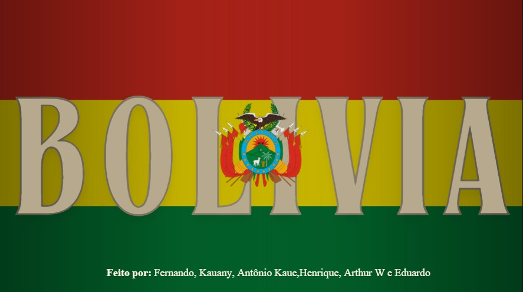
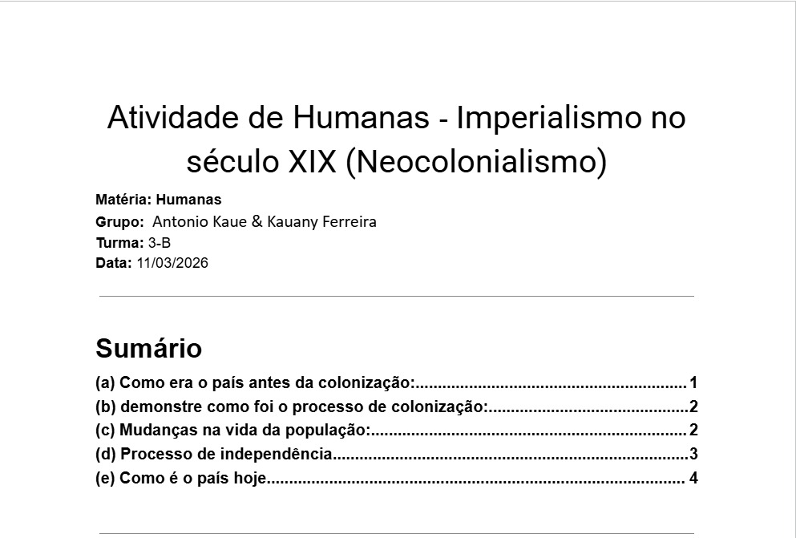
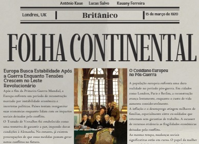
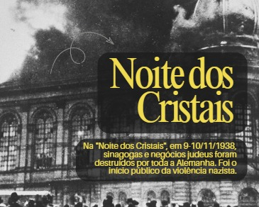
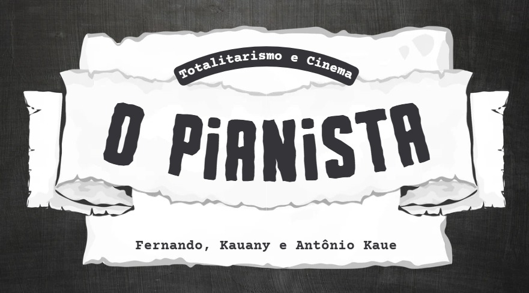
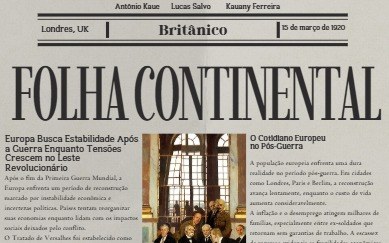

Iniciei a aula com jogos geográficos e, em dupla, pesquisei dados atualizados para criar uma apresentação sobre um país escolhido. Fiz isso para introduzir o conceito de geopolítica de forma prática e preparar o material para o seminário comparativo entre as nações. Com essa atividade, aprendi a analisar criticamente a posição política e econômica de um país no cenário global e as relações de poder envolvidas.
C1 – Compreender processos históricos, sociais e geográficos nos diversos aspectos da vida em sociedade.
H1 - Reconhecer o processo de formação do indivíduo nos aspectos históricos, geográficos, sociais e filosóficos.
H2 - Compreender o processo de socialização do indivíduo, considerando os princípios do pensamento e da lógica.
H3 - Compreender as relações de poder entre os diversos grupos sociais.
H4 - Compreender mudanças e permanências ao longo do tempo na constituição da sociedade.
H5 - Analisar criticamente os aspectos políticos, econômicos e sociais relacionados à formação da sociedade no Brasil e no mundo.

Analisei a trajetória da Índia desde o período pré-colonial até os dias atuais, focando no domínio britânico e na resistência de Gandhi. Fiz isso para compreender na prática os impactos do Imperialismo e como a exploração econômica transformou a infraestrutura e a sociedade indiana. Com essa atividade, aprendi a identificar as marcas da colonização e o processo de independência que moldou a Índia como a potência democrática e tecnológica que é hoje.
C2 - H8, H10, H12
H8 – Analisar as relações entre os agentes envolvidos no mundo do trabalho.
H10 – Compreender as transformações no mundo do trabalho, geradas por mudanças na ordem econômica.
H12 – Propor ações sustentáveis e eficientes visando a melhoria dos processos produtivos.

Desenvolvi uma capa de jornal de época no Canva, assumindo o papel de um jornalista no início do século XX para escrever sobre a Grande Guerra e a Revolução Russa. Fiz isso para aplicar os conceitos de geopolítica e conflitos globais de forma criativa, simulando o estilo visual e o ponto de vista jornalístico daquela década. Com essa atividade, aprendi a estruturar uma argumentação histórica autêntica e a compreender como a nacionalidade e o contexto político influenciam a narrativa dos fatos.
C3 - H15, H16, H20
H15 – Reconhecer os movimentos sociais e sua representação da coletividade como elemento de transformação da realidade social, política, econômica e cultural.
H16 – Compreender a relação entre ciência, tecnologia e sociedade e os efeitos dessa relação no contexto social, político e econômico.
H20 – Implementar ações de proteção ou recuperação ambiental com base em princípios, leis e iniciativas de desenvolvimento sustentável.

Na aula desta semana, exploramos o papel da comunicação no combate à desinformação sobre o Holocausto e a relevância de checar fontes históricas. Gostei muito de aprender a sintetizar temas complexos em formatos dinâmicos para redes sociais, aproximando o conhecimento acadêmico do público. O único ponto desafiador foi limitar fatos históricos tão densos ao limite rigoroso de caracteres exigido nas postagens.
C2, C4 - H22, H26, H27

Nesta aula, analisamos o filme O Pianista para compreender o funcionamento prático e devastador de um regime totalitário. Gostei de ver como o cinema retrata detalhadamente a perda gradual dos direitos humanos e a resistência por meio da arte. O ponto mais difícil foi assimilar a frieza do processo de desumanização e segregação retratado nas cenas do Gueto de Varsóvia.
H10 – Compreender as transformações no mundo do trabalho, geradas por mudanças na ordem econômica.
H22 – Analisar, na perspectiva humana e social, as principais características e dinâmicas dos fluxos da sociedade.
H26 – Comparar pontos de vista e ações práticas do indivíduo ou grupo social em diferentes contextos.
H27 – Analisar hipóteses e questões ambientais, sociais, econômicas, políticas e culturais, a partir de leituras e debates.

Nesta atividade, assumimos o papel de jornalistas do início do século XX e criamos a capa do jornal Folha Continental, datada de 1920. Gostei muito de vivenciar a prática do jornalismo investigativo e aplicar a estética standard para relatar a Primeira Guerra Mundial e a Revolução Russa. O que menos gostei foi a dificuldade de condensar textos históricos tão extensos na diagramação rigorosa do Canva sem perder a clareza do design.
C3 - H15, H16, H20 - C6 - H39